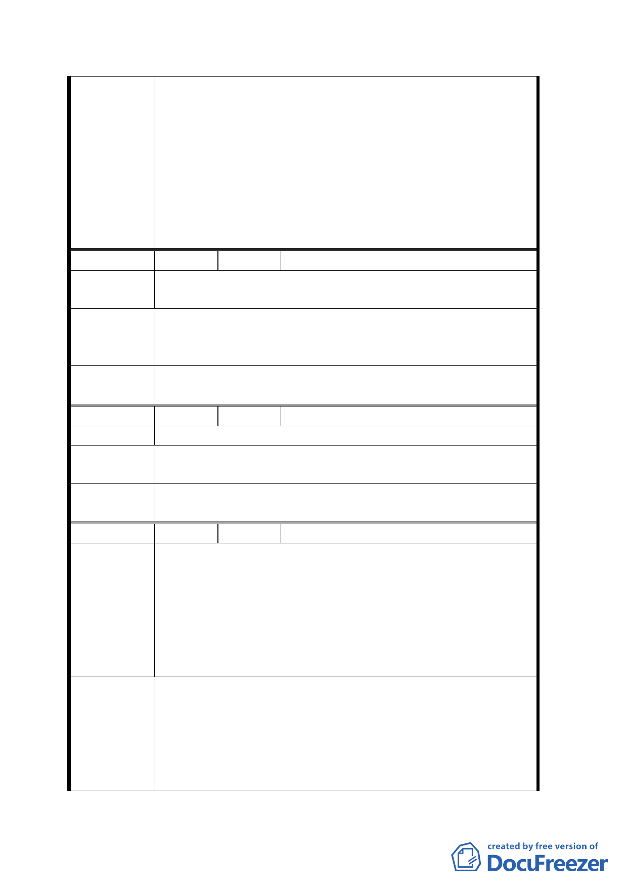

設置騎樓無遮簷人行道計畫案」規定北、西兩側應退縮 3.64
公尺興建。而老泉變電所（刻於市都委會審議中）所需面
積約 5,225 平方公尺（不含鐵塔），若與第 28 號鐵塔(需用
面積 1,009 平方公尺)共構興建，則需擴大用地面積為 6,350
平方公尺，惟前揭用地面積僅 5,814 平方公尺，尚且地形不
佳又有禁建退縮規定，實不敷使用，故建議維持本案電力
設施用地分設二處之計畫。
編 號 ２ 陳情人 莊裕基
陳情理由
老泉里都市重劃區內變電所應集中一處，以利都市寸土都
能充分利用，又不易造成太多後遺症。
老泉里預定之變電所集中到老泉段四小段二九五及二九八
建 議 辦 法 兩個地號處，並將附近土地擴大收購徵收，以利寸土不浪
費及原二十八號鐵柱拆除後荒廢都市土地的浪費。
委 員 會決
議
同編號 1。
編 號 ３ 陳情人 林忠一
陳 情 理 由 設置變電所及鐵塔設立分立二處，浪費土地使用。
建議辦法
建議電塔及變電所設立同一處，擴大一壽橋彎頭土地，並
加以綠化。
委 員 會決
議
同編號 1。
編 號 ４ 陳情人 臺北市文山區老泉里辦公處
當初市府都市發展局於九十三年八月十九日針對「老泉里
一小部分二十六公頃規劃」舉行說明會時，即因地主們反
對僅有百分之四十的土地回饋比例，及爭取「住三」的權
陳 情 理 由 益，導致散會，至今未再進行協調。此次關於變電所設置
問題，又再次引起地主們反彈，認為於規劃區內商業區開
設變電所，更為不妥。且在二十六公頃的土地中於兩處設
置電塔及變電所，不符合土地利用效益，密度也太高。
地主們希望電塔及變電所能合併設置於一處。加上老泉段
四小段二九四、二九五地號的地主同意設電塔，但要求其
建議辦法
餘三千多坪土地亦納入台電徵收用地，若台電公司能接
受，如此便能將變電所與電塔合併設置一處，里民和地主
們也會一改反對態度，轉而支持、贊成，既能減少雙方協
調時的衝突，也有利於計劃案的實施。
四